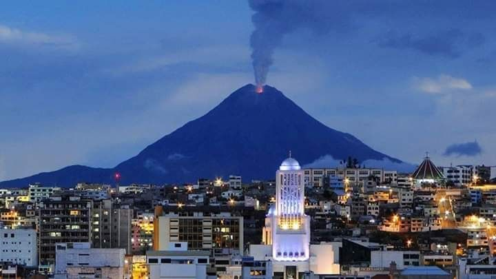

About Me
My name is Iván Chulde. I was born in Puyo, Ecuador, and I currently live in Ambato. I am an Electronics and Communications Engineer, and I work as the Zonal Director of Technology and Support at ECU 911. I am happily married and have a passion for technology.
Ambato, Ecuador

Ambato is a vibrant city located in the central highlands of Ecuador, known for its beautiful landscapes, rich culture, and economic vitality. It is often referred to as the “City of Flowers and Fruits” and is famous for its annual festival celebrating these gifts of nature. Ambato is also an important hub for commerce, education, and industry in the region.